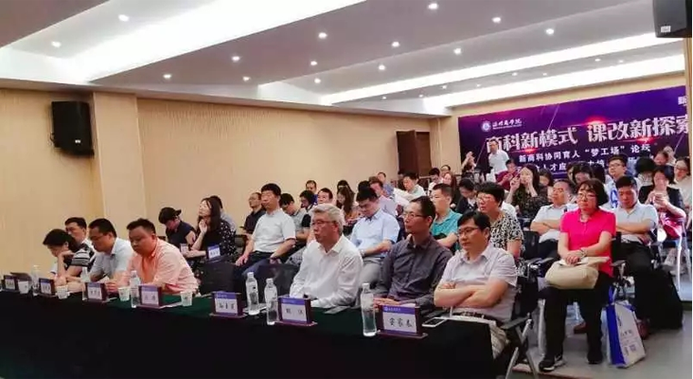

新道科技与金华职业技术学院专业共建战略签约
2018年6月1日至6月2日，由温州商学院主办、新道科技股份有限公司（后简称“新道科技”）协办的“商科新模式 课改新探索 新商科协同育人‘梦工场’论坛暨云财会人才应用能力培养教师研修班”在浙江温州顺利举办。
新商科协同育人“梦工场”论坛现场
温州商学院常务副校长谢健教授、副校长孙玉甫教授、会计学院副院长窦家春副教授，新道科技总裁周前进先生、助理总裁兼浙江区总经理冯学平先生，以及企业方特邀嘉宾品华（国际）文化产业集团财务总监魏金鹏先生和乐清乐怡会计师事务所有限公司注册会计师兼项目经理金益诗女士等出席了论坛，此次会议共计50余位嘉宾齐聚温州鹿城，共同探讨新商科的课程、课堂教学改革。
校企合作战略签约
温州商学院与新道科技密切合作，探索实施了新商科协同育人模式，大力培养商科学生的创新创业能力和实际业务处理能力，形成了具有创新意义和推广价值的教学改革成果。同时，温州商学院会计学院以职业需求为导向，以实践能力培养为重点，以产教融合为途径，建立了新型财会人才培养模式。
2016年，温州商学院引进了“新道VBSE创新创业经营决策训练平台”以及“i实习财务综合实践平台”，双方于同年11月达成战略合作，并共建“温商企业运营仿真实训中心”校企共建创业学院，通过构建智慧实践教学平台，仿真企业场景，营造探究式学习场景。目前，基于i实习财务综合实践平台，学校已面向会计学院500人同时开课；VBSE创新创业经营决策课程也已纳入学校人才培养计划，并且按照32学时2学分进行了教学设计安排，面向全校16级所有专业集中实训2周。
会议期间，温州商学院常务副校长谢健教授、新道科技总裁周前进先生代表校企双方签署了校企合作与协同育人协议书。双方就专业共建达成正式合作，通过新道提供课程及师资，共建会计实践教学中心，即智慧学习工场，协同培育新型财会人才。
新商科协同育人“梦工场”论坛现场
会议开始，温州商学院常务副校长谢健教授为此次会议致欢迎词，并通过主题报告《新时代民办商科院校人才培养》，阐述了新时代民办商科院校的高等教育是从大众化阶段向普及化阶段发展的特点，并介绍了温州商学院创业型国际化商学院的办学定位和具有国际视野和现代商业精神的复合应用型人才的人才培养定位、多维复合应用型人才模式以及温州商学院人才培养的实践，并提出本科人才培养中素质教育的重要性。